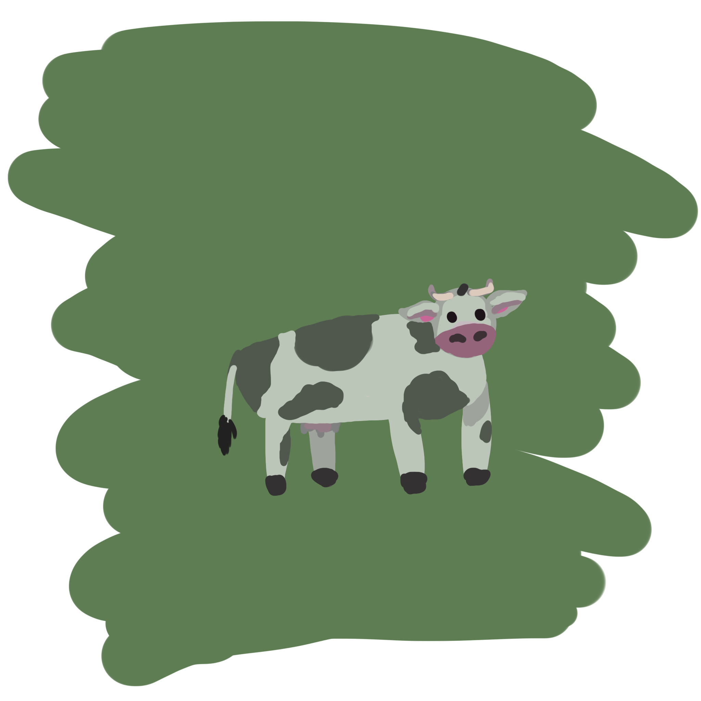
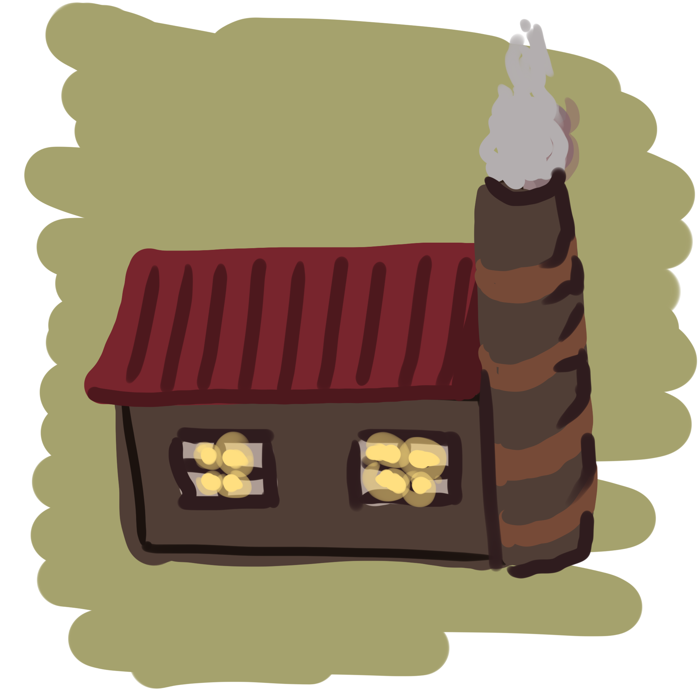
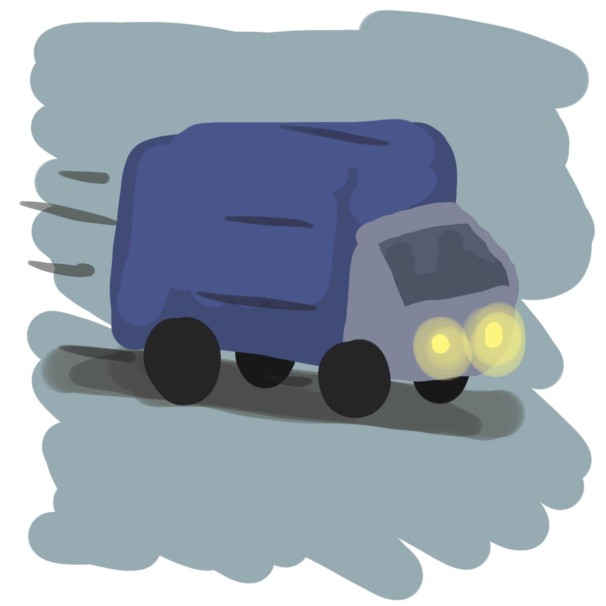
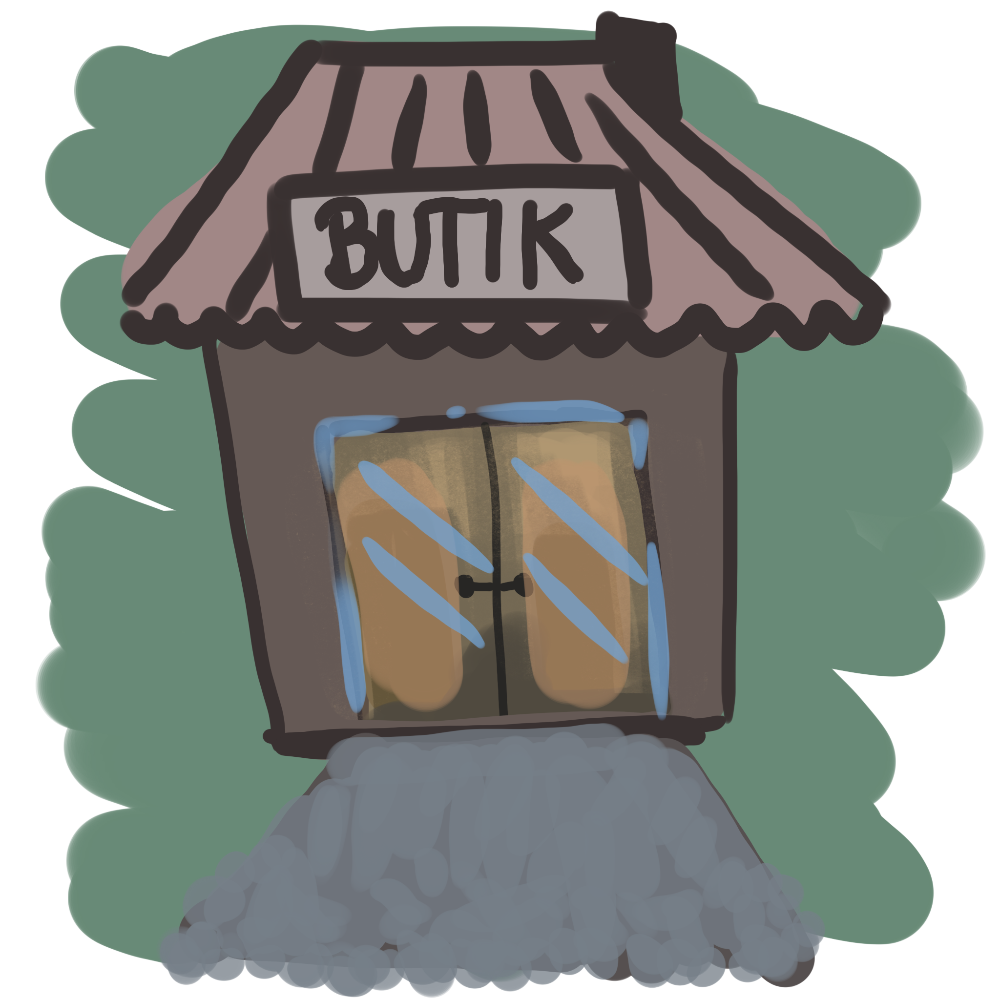
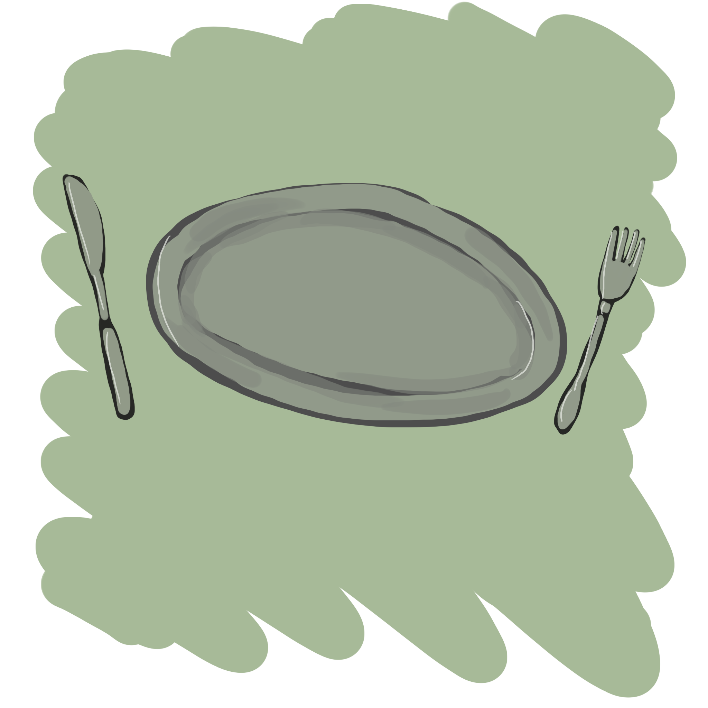

Hur påverkar maten vi handlar och livsmedelstillverkningen den hållbara utvecklingen?
För att förstå hur mat och klimat hänger ihop så kommer vi gå igenom tre större punkter.
1.Hela vägen från odling till egen konsumtion av maten.
2.Svinn och vad det innebär för klimatet.
3. Vad vi människor kan göra för att minska miljöpåverkningen.
För att maten ska nå tallriken så genomgås flera steg

Steg 1: Odling
Det är här matens resa börjar. Djuruppfödning kräver foder samt så är grödor i behov av både vatten och mark. Både klimatet och den biologiska mångfalden påverkas av Jordbruket.

Steg 2: Produktion/tillverkning
Råvaror brukar oftast bearbetas innan de säljs. Exempelvis blir vete till mjöl som sedan görs bröd utav. Energi krävs bland annat vi tillverkningen.

Steg 3: Transport
Transportering mellan gård, fabrik och butiker måste ske, det kan orsaka utsläpp av växthusgaser.

Steg 4: Butik
I butiken kan även maten behövas förvaras kyld eller fryst för att förbli färsk. Matsvinn i butiker och förvaring påverkar också miljön.

Steg 5: På tallriken
Tilllagning och förvaring påverkar också svinnet. Där kan resurser också gå förlorade.
Vad händer när vi slänger mat och varför är det ett miljöproblem?
Vad kan vi konsumenter göra för att minska miljöpåverkan?
Snabblänkar till alla delområden:

Mat och livsmedel
Det vi lägger på tallriken står för en stor del av vår klimatpåverkan. På den här sidan går vi igenom hur matproduktionen påverkar jorden, varför matsvinn är ett så stort problem och hur du kan äta både gott, hälsosamt och klimatsmart.
Transporter
Hur vi tar oss till jobbet, affären eller på semestern spelar enorm roll för utsläppen. Här jämför vi bil, kollektivtrafik, cykel och flyg samt tittar närmare på hur framtidens fossilfria resor ser ut.

Avgaser och nedskräpning
Vad händer egentligen med luften vi andas och naturen omkring oss när skräp hamnar fel och avgaser släpps ut? Här får du koll på hur utsläpp och nedskräpning påverkar vår hälsa, djurlivet och närmiljön och vad som krävs för att vända utvecklingen.

Kläder och textil
Klädindustrin kräver enorma mängder vatten och kemikalier, och produktionen sker ofta under tuffa arbetsvillkor. Här granskar vi snabbmode, vad dina kläder egentligen kostar för miljön och hur du kan tänka kring kvalitet, second hand och återbruk.